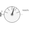

AbsoluteSensorMeasure absolute kinematic quantities of frame connector |

|
Diagram
{kind=link}
Information
This information is part of the Modelica Standard Library maintained by the Modelica Association.
Absolute kinematic quantities of frame_a are determined and provided at the conditional output signal connectors. For example, if parameter "get_r = true", the connector "r" is enabled and contains the absolute vector from the world frame to the origin of frame_a. The following quantities can be provided as output signals:
- Absolute position vector (= r)
- Absolute velocity vector (= v)
- Absolute acceleration vector (= a)
- Three angles to rotate world frame into frame_a (= angles)
- Absolute angular velocity vector (= w)
- Absolute angular acceleration vector (= z)
Via parameter resolveInFrame it is defined, in which frame a vector is resolved:
| resolveInFrame = Types.ResolveInFrameA. | Meaning |
|---|---|
| world | Resolve vectors in world frame |
| frame_a | Resolve vectors in frame_a |
| frame_resolve | Resolve vectors in frame_resolve |
If resolveInFrame = Types.ResolveInFrameA.frame_resolve, the conditional connector "frame_resolve" is enabled and the vectors are resolved in the frame, to which frame_resolve is connected. Note, if this connector is enabled, it must be connected.
In the following figure the animation of an AbsoluteSensor component is shown. The light blue coordinate system is frame_a and the yellow arrow is the animated sensor.

Velocity, acceleration, angular velocity and angular acceleration are determined by differentiating them in the world frame and then transforming them in to the frame defined by resolveInFrame.
For example, if resolveInFrame = Types.ResolveInFrameA.frame_a, then
v0 = der(frame_a.r0); v = resolve2(frame_a.R, v0);
is returned, i.e., the derivative of the absolute distance from the world frame to the origin of frame_a, resolved in frame_a.
The cut-force and the cut-torque in frame_resolve are always zero, whether frame_resolve is connected or not.
If get_angles = true, the 3 angles to rotate the world frame into frame_a along the axes defined by parameter sequence are returned. For example, if sequence = {3,1,2} then the world frame is rotated around angles[1] along the z-axis, afterwards it is rotated around angles[2] along the x-axis, and finally it is rotated around angles[3] along the y-axis and is then identical to frame_a. The 3 angles are returned in the range
-π <= angles[i] <= π
There are two solutions for "angles[1]" in this range. Via parameter guessAngle1 (default = 0) the returned solution is selected such that |angles[1] - guessAngle1| is minimal. The absolute transformation matrix of frame_a may be in a singular configuration with respect to "sequence", i.e., there is an infinite number of angle values leading to the same absolute transformation matrix. In this case, the returned solution is selected by setting angles[1] = guessAngle1. Then angles[2] and angles[3] can be uniquely determined in the above range.
The parameter sequence has the restriction that only values 1,2,3 can be used and that sequence[1] ≠ sequence[2] and sequence[2] ≠ sequence[3]. Often used values are:
sequence = {1,2,3} // Cardan or Tait-Bryan angle sequence
= {3,1,3} // Euler angle sequence
= {3,2,1}
Parameters (10)
| animation |
Value: true Type: Boolean Description: = true, if animation shall be enabled (show arrow) |
|---|---|
| resolveInFrame |
Value: Modelica.Mechanics.MultiBody.Types.ResolveInFrameA.frame_a Type: ResolveInFrameA Description: Frame in which vectors are resolved (world, frame_a, or frame_resolve) |
| get_r |
Value: false Type: Boolean Description: = true, to measure the absolute position vector of the origin of frame_a |
| get_v |
Value: false Type: Boolean Description: = true, to measure the absolute velocity of the origin of frame_a |
| get_a |
Value: false Type: Boolean Description: = true, to measure the absolute acceleration of the origin of frame_a |
| get_w |
Value: false Type: Boolean Description: = true, to measure the absolute angular velocity of frame_a |
| get_z |
Value: false Type: Boolean Description: = true, to measure the absolute angular acceleration of frame_a |
| get_angles |
Value: false Type: Boolean Description: = true, to measure the 3 rotation angles |
| sequence |
Value: {1, 2, 3} Type: RotationSequence Description: If get_angles=true: Angles are returned to rotate world frame around axes sequence[1], sequence[2] and finally sequence[3] into frame_a |
| guessAngle1 |
Value: 0 Type: Angle (rad) Description: If get_angles=true: Select angles[1] such that abs(angles[1] - guessAngle1) is a minimum |
Inputs (2)
| arrowColor |
Default Value: Modelica.Mechanics.MultiBody.Types.Defaults.SensorColor Type: Color Description: Color of absolute arrow from world frame to frame_b |
|---|---|
| specularCoefficient |
Default Value: world.defaultSpecularCoefficient Type: SpecularCoefficient Description: Reflection of ambient light (= 0: light is completely absorbed) |
Connectors (8)
| frame_a |
Type: Frame_a Description: Coordinate system a of which the absolute kinematic quantities are measured |
|
|---|---|---|
| r |
Type: RealOutput[3] Description: Absolute position vector frame_a.r_0 resolved in frame defined by resolveInFrame |
|
| v |
Type: RealOutput[3] Description: Absolute velocity vector |
|
| a |
Type: RealOutput[3] Description: Absolute acceleration vector |
|
| angles |
Type: RealOutput[3] Description: Angles to rotate world frame into frame_a via 'sequence' |
|
| w |
Type: RealOutput[3] Description: Absolute angular velocity vector |
|
| z |
Type: RealOutput[3] Description: Absolute angular acceleration vector |
|
| frame_resolve |
Type: Frame_resolve Description: If resolveInFrame = Types.ResolveInFrameA.frame_resolve, the output signals are resolved in this frame |
Components (14)
| position |
Type: AbsolutePosition |
|
|---|---|---|
| velocity |
Type: AbsoluteVelocity |
|
| absoluteAngles |
Type: AbsoluteAngles |
|
| angularVelocity |
Type: AbsoluteAngularVelocity |
|
| der1 |
Type: Der[3] |
|
| der2 |
Type: Der[3] |
|
| transformVector_a |
Type: TransformAbsoluteVector |
|
| transformVector_z |
Type: TransformAbsoluteVector |
|
| world |
Type: World |
|
| arrow |
Type: Arrow |
|
| absoluteVelocity |
Type: AbsoluteVelocity |
|
| absoluteAngularVelocity |
Type: AbsoluteAngularVelocity |
|
| zeroForce1 |
Type: ZeroForceAndTorque |
|
| zeroForce2 |
Type: ZeroForceAndTorque |